1974年10月版イヤスピーカー
1974年10月版イヤスピーカー�T.カタログ
1.総合カタログ
（1）1971年10月版カタログ
現時点までに入手した中では、最古のカタログ（＊）。表紙を含めても4ページしかない。短命だった初代のSR-Xが掲載されている。
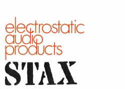
＊1960年代（掲載製品からみて1966年頃か？）のカタログを「Susumuの情報」様が公開しています。管理人様の許可を得て、掲載ページヘリンクを設定しました。カタログと共に掲示されている技術資料には、後にFONTEK RESEARCHを興す丹羽氏が、社員として参加しています。
（2）1973年10月版カタログ
71年10月版と同様に4ページ。SR-Xがmk2に、POD-XがXEに変更されただけである。製品の値段に誤植があり、手書きで修正している。
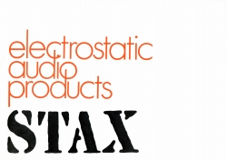
1973年10月版（3）1974年11月版カタログ
やはり4ページしかない。SRD-5がSRD-6に変更にされただけである。広告のページを見ればわかるように、このころは新製品が少なかった。
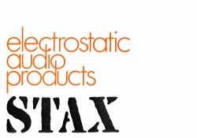
1974年11月版（4）1976年3月版カタログ
デザインは従来どおりのA4横だが、一部のロゴの色と、「STAX」の書体が変わった。1975年の新製品ラッシュで全6ページとなった。
（5）1977年9月版カタログ
76年3月版と同様に全6ページだが、パワーアンプなど新製品で、空欄だった場所が埋まった。
（6）1978年9月版カタログ
ロゴとその配置が変わった。SR-Σ（シグマ）の登場などで全8ページ。
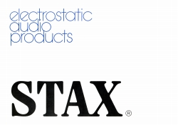
1978年9月版(7）1979年10月版カタログ
ベーズカラーが黒に変わった。全10ページ。アナログディスク爛熟期のカタログ。
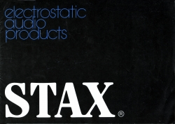
1979年10月版（8）1982年10月版カタログ
現時点ではいつ変わったのかわからないが、1980年代以降はほぼ正方形のスタイルになった。高くて手がでないが、これより前のバージョンもオークションで見かけた。全12ページ。この時点で本社は埼玉三芳に移っている。
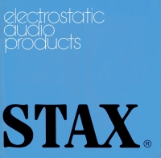
1982年10月版 （「蒼乃雑記」蒼乃さんの提供）（9）1984年3月版カタログ
興味深いのは、この時点で現行のバイアス電圧（580V）の製品は存在するが、まだカタログに掲載されていないことである。(*)全12ページ。
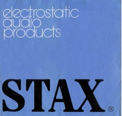
*その後、�泣Xタックス様から1986年2月版カタログより、現行のバイアス電圧（580V）の製品が掲載されたことを、教わりました。なお現在では確認できませんが、かつてSTAX Unofficial Pageに収録された資料では1985年10月製作のカタログから記載されていた記憶がある。
（10）1987年10月版カタログ
ロゴの色が入れ替えられた。カートリッジが受注生産になっており、アナログ関連機器の衰退が目立ち始めた時期である。全12ページ。
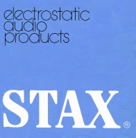
1987年10月版（11）1988年12月版カタログ
創立50周年の年のカタログ。まだこの時点ではノーマル・バイアス/プロ・バイアス機が両方ある機種では、先輩格のノーマル・バイアス機が先に表示されている。全12ページ。
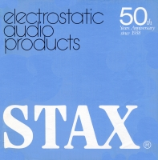
1988年12月版（12）1990年10月版カタログ
イヤスピーカー発売30周年の年のカタログ。1971年発売のSR-Xの系統が姿を消している。またΣProfessionalやΛSignatureなどは膜厚1ミクロンと同社史上一番薄膜な時代である。超弩級のパワーアンプや、管球式のDAコンバーターなども掲載されている。一方でアナログ関連機器では、カートリッジが姿を消し、記載スペースも縮小された。全12ページ。
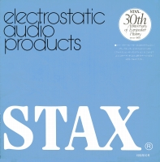
（13）1992年12月版カタログ
ベースカラーがグリーンに変更。このカタログでは、ノーマル・バイアスのヘッドフォンが消えている。また1983年に強力に推した小型コンデンサースピーカーESTA4U関連の製品も消えた。またラウドスピーカーがすべて受注生産に切り替わった。全12ページ。
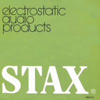
1992年12月版（14）1994年10月版カタログ
全14ページと、手持ちのカタログでは最大のページ数だが、セット商品中心が進み、「受注生産」の範囲はさらに広がってパワーアンプも含まれた。
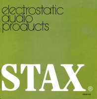
1994年10月版 （15）1995年10月版カタログ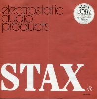
(16）1997年7月版カタログ
現在の�泣Xタックスのカタログ。デザインはがらりと変わって、製品画像が全面にでている。若干のアクセサリーは残っているが、完全にヘッドホン専業となったことが明確となっている。まだこの時点では、製品はすべて株式会社時代からの継続製品である。全8ページ。
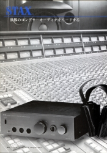
1997年7月版（17）1999年6月版カタログ
版形は違うが旧来のカタログのデザインに戻った。主要製品も有限会社時代のものになった。しかしもはや、カートリッジもラウドスピーカーもなく、「eiectrostatic
audio
products」のロゴが寂しげである。SR-001系やSR-007は別立てなのか、掲載されていない。このあとはSR-007の固定極を思わせるデザインが数年続いたと記憶している。全6ページ。
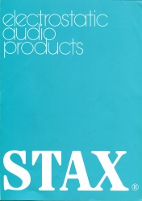
2.単品カタログ
�@イヤスピーカー（ヘッドフォン）・システム商品
 SR-Λ（ラムダ）Professional/SRM-1/MK-2PRO
英文カタログ (�泣Xタックス様から提供）
SR-Λ（ラムダ）Professional/SRM-1/MK-2PRO
英文カタログ (�泣Xタックス様から提供）
 SR-α（アルファ）Professional/SRD-7mk2
SR-α（アルファ）Professional/SRD-7mk2
 SR-Σ（シグマ）Professional/SR-Λ（ラムダ）Signature/SRM-T1
SR-Σ（シグマ）Professional/SR-Λ（ラムダ）Signature/SRM-T1
�Aドライバーユニット・アダプター・（イヤスピーカー用）アンプ
・ドライバーユニット
（注 昇圧過程でトランスを使用するため「SRD」型番がついていますが、用途がラインレベル接続なので、ドライバーユニットに分類しております。）
・（イヤスピーカー用）アンプ
�Bその他のオーディオ製品
・ラウドスピーカー
・パワーアンプ
・CDプレイヤー
・DAコンバーター
トップページへ